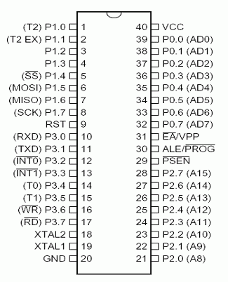
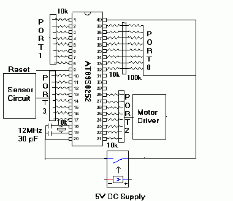
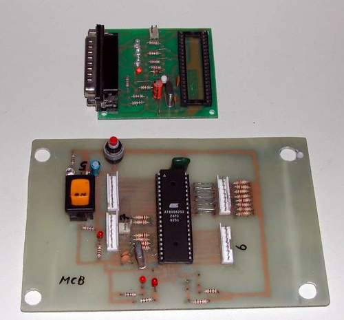

A microcontroller is similar to a processor in a computer. The primary difference is that the microcontroller has the CPU, the flash memory, the RAM and external ports all built into a single chip. All this makes the microcontroller very cheap and is true value for money. But where it takes a beating is the speed. Microcontrollers are low speed devices when compared to their equivalent microprocessors. Faster microcontrollers are available. Since I didn't need complex processing for the robot I settled for the microcontroller.
FIRE uses an 8051 microcontroller as its CPU. The 8051 has many breeds and I use the one made by ATMEL called AT89S8252.
8051 family
Intel Corporation first designed 8051 Micro-controller and after several years Intel Corporation gave license to other companies like Siemens, Atmel, Dallas Semiconductor, Phillips. The micro-controllers designed by other companies are a part of 8051 family and also have the instruction set and same architecture. The main difference between the different manufactures is the on-chip memory and type of ROM used. The different types of ROM used are Flash, UV RAM, NV RAM and OTP. The commercial product from Intel is called 8751 and that Micro-controller used UV ROM. The main disadvantage of using this type of ROM was it takes time to erase the chip and program the chip. Atmel introduced micro-controllers with Flash ROM. The main advantage is, very easy to program and no need for external hardware for erasing the chip. The programming kit itself, erase and then program. Also the time consumed is very less and this improved the developing time. Dallas Semiconductor introduced micro-controllers with NV RAM. The advantage of this micro-controller is that it can be programmed even when it is on-line. Also bit-by-bit programming can be done. Phillips introduced micro-controllers with OTP (One time Programmable) memory. The main drawback is that, once the code has been burned in the chip it is not possible to erase the chip.
Atmel AT89S8252 specifications
- Compatible with MCS-51™ products
- 8 KB in-system reprogrammable flash memory (SPI interface, 1,000 write/erase endurance)
- 2 KB EEPROM (100,000 write/erase endurance)
- Operates from 4.0 V to 6.0 V
- Fully static operation: 0 Hz to 24 MHz
- Three-level program memory lock
- 256 × 8-bit internal RAM
- 32 programmable I/O lines
- Three 16-bit timers/counters
- Nine interrupt sources
- Programmable UART serial channel
- SPI serial interface
- Low-power idle and power-down modes
- Interrupt recovery from power-down
- Programmable watchdog timer
- Dual data pointer
- Power-off flag
Download Data sheet here
Pin configuration AT89S8252

Ports
Ports are the channels through which a microcontroller communicates with the outside world. Out of the 4 ports available 2 ports are used in FIRE. Port 2 is used to control the 3 motors and are connected to the respective motor driver IC's. Port 3 is used for inputs from the obstacle and IR sensors.
Interrupts
Interrupts are a very important feature of the microcontroller. These are signals which force the microcontroller to perform specific actions. The port 3 has 2 pins INT0 and INT1 for receiving external interrupt signals. These are the pins where the signals from the sensors are received.
Programming
For a microcontroller to perform actions, program code has to be written onto the internal memory of the microcontroller. This can be done using hardware units called programmers.
Find the programmer used for the AT89S8252 at http://www.aec-electronics.co.nz
Details on how to make your own programmer are given. The software for writing the code is also given. To write the code I use this software called UMPS (Universal Microprocessor Program Simulator). Using this, the program can be written and tested. It also supports many other microcontrollers.
After writing the code (.asm extension), it is assembled using an assembler specific to the microcontroller (in this case an 8051 assembler). The output of this assembler is an hex file which can be written onto the chip using the In System programmer given in the above .
Algorithm
FIRE follows a simple reactive algorithm:
- Start.
- Camera faces forward (manual control).
- Move forward — both motors running forward.
- Continuously scan Port 3 for obstacle interrupts.
- If the left IR interrupt (IRTL) is triggered, perform a right-side avoidance sequence:
- Stop both motors.
- Rotate the camera 180° to face backward.
- Reverse for 3 seconds.
- Rotate the camera 225° to face northeast.
- Turn right: right motor stops, left motor runs at high speed for 2 seconds.
- Rotate camera back to face forward.
- If the right IR interrupt (IRTR) is triggered, perform a left-side avoidance sequence:
- Stop both motors.
- Rotate the camera 180° to face backward.
- Reverse for 3 seconds.
- Rotate the camera 135° to face northwest.
- Turn left: left motor stops, right motor runs at high speed for 2 seconds.
- Rotate camera back to face forward.
- If no interrupt is triggered, continue forward motion.
- End.
Code
ORG 0000H
SJMP MAIN
ORG 0003H
LJMP LEFTOB
ORG 0013H
LJMP RIGHTOB
MAIN MOV IE,#85H ;Enable External Interrupts
MOV R2,#0EH ;Load Register r2 with 1F(outer 8 bit repeater loop)
LOOP ACALL DELAY ;Call Delay Subroutine
ACALL FORWARD ;Call Forward Subroutine
DELAY MOV TMOD,#01H ;Configure Timer Control for Timer 0 mode 1
MOV TH0,#00H ;Load high order 8 bit
MOV TL0,#00H ;Load low order 8 bit
SETB TR0 ;Start Timer
AGAIN JNB TF0,AGAIN ;Check for Timer Flag
CLR TF0 ;Clear timer flag
CLR TR0 ;clear timer Register
DJNZ R2,DELAY ;Decrement register R2 and jump if non-zero
RET ;Return to main Program
FORWARD MOV P2,#0B8H ;Forward Motion
SJMP FORWARD
LEFTOB MOV IE,#00H ;Disable all Interrupts
MOV P2,#0FCH ;Forceful Stop
MOV P2,#02H ;Rotate Camera
MOV R2,#014H ;Delay
ACALL DELAY ;Call Delay Subroutine
MOV P2,#0D4H ;Reverse Motors
MOV R2,#01CH ;Delay
ACALL DELAY ;Call Delay Subroutine
MOV P2,#0FCH ;Forceful Stop
MOV P2,#02H ;Rotate Camera
MOV R2,#15H ;Delay
ACALL DELAY ;Call Delay Subroutine
MOV P2,#0BCH ;Rotate Left Motor
MOV R2,#01CH ;Delay
ACALL DELAY ;Call Delay Subroutine
MOV P2,#0FCH ;Forceful Stop
MOV P2,#02H ;Rotate Camera
MOV R2,#01FH ;Delay
ACALL DELAY ;Call Delay Subroutine
MOV P2,#00H ;Clear Outputs
MOV R2,#04H ;Delay
ACALL DELAY ;Call Delay Subroutine
MOV IE,#85H ;Enable All Interrupts
RETI
RIGHTOB MOV IE,00H ;Disable All Interrupts
MOV P2,#0FCH ;Forceful Stop
MOV P2,#02H ;Rotate Camera
MOV R2,#12H ;Delay
ACALL DELAY ;Call Delay Subroutine
MOV P2,#0D4H ;Reverse Motors
MOV R2,#01CH ;Delay
ACALL DELAY ;Call Delay Subroutine
MOV P2,#0FCH ;Forceful Stop
MOV P2,#02H ;Rotate Camera
MOV R2,#0EH ;Delay
ACALL DELAY ;Call Delay Subroutine
MOV P2,#0F8H ;Rotate Right Motor
MOV R2,#1CH ;Delay
ACALL DELAY ;Call Delay Subroutine
MOV P2,#0FCH ;Forceful Stop
MOV P2,#02H ;Rotate Camera
MOV R2,#07H ;Delay
ACALL DELAY ;Call Delay Subroutine
MOV P2,#00H ;Clear Outputs
MOV R2,#0EH ;Delay
ACALL DELAY ;Call Delay Subroutine
MOV IE,#85H ;Enable All Interrupts
RETI
Circuit

Images

(Top: Programmer, Bottom: Microcontroller board)